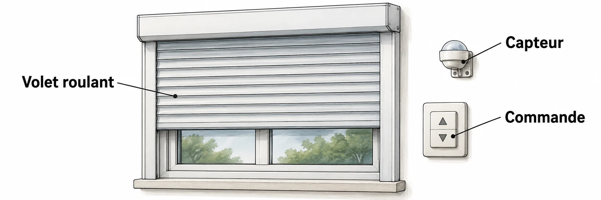

OBSERVER · EXPÉRIMENTER · EXPLIQUER
Les chaînes d’un volet automatique
Explore une grandeur mesurée, son code et le temps d’ouverture du volet.

✎ Garde ta feuille à côté de toi.Ordinateur : manipulations et mesures simulées. Papier : relevés, réponses, calculs et croquis. Matériel réel : essai complémentaire si disponible.
Des observations pour expliquer
- Q4 : calcule d’abord les codes, puis compare tes résultats au modèle.
- Q5–Q8 : garde les valeurs individuelles, calcule les énergies et explique la transmission.
Appuie ton explication sur une valeur, un changement observé ou une comparaison. Distingue ce que montre le modèle et ce qui reste à vérifier.